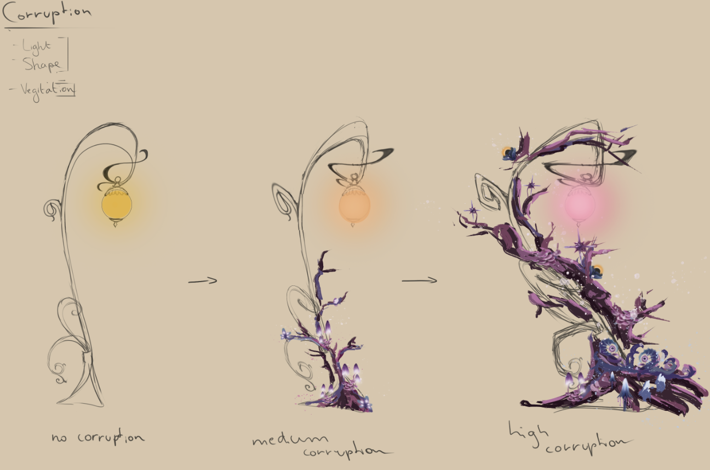
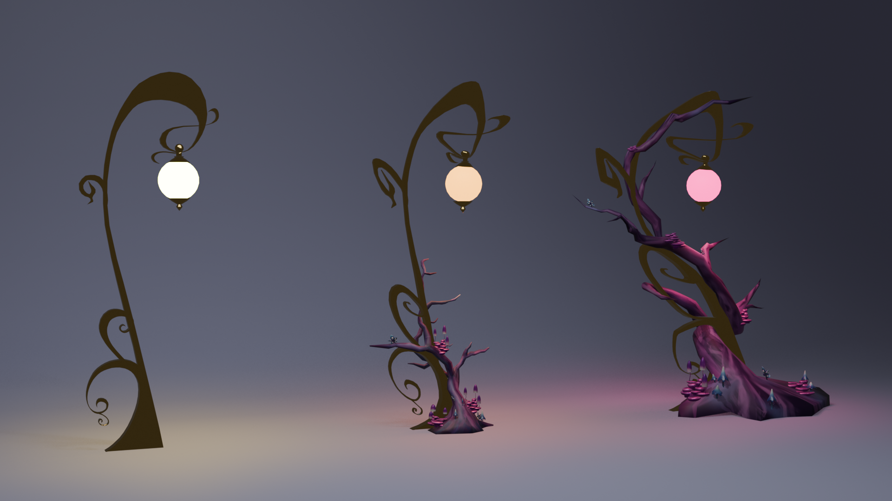

Luhor's Memory
Lore
Old gods in a world where they are no longer needed. No longer remembered. A volatile tragedy. For these gods, human prayer manifests as ambrosia, a honey-like liquid, that, through the thousands of years of worship, they grew dependent on. Maybe even addicted.
Now that humans have forgotten about them, they have been left to starve, until one day one of the gods had enough. He broke open the sky and demanded worship through fear. The mortal plane, not being able to contain his power starts corrupting around him, turning humans into mangled monsters and the surface violent and dangerous.
Luckily one man, our protagonist Hughie, was prepared. A librarian versed in prophecy and heir to a lineage of God hunters, he knows it falls to him to keep the world from shattering.
As he sees the skies break apart, knowing the streets are no longer safe, He heads into the subway system to track down the god’s commanders, who took over the power grids of the city.
And on the way, he gets help from a very unexpected figure...
Gameplay Video
The group
We started this project with 6 people in total. 2 programmers and 4 artists. In week 2 of the semester we got assigned a Composer to bring our game to life.
Before we even got started in the semester we had already made our first prototype with unrealBP.
This helped us convice the teachers to allow us to start on this project.
In this early prototype we already had the core gameplay loop in place. We wanted to make a game where you could swap weapon layouts dynamically for a tactical combat style.
But as everyone knows, prototypes are usually good to see if the game is fun, but terrible to check for the size of scope.
When the project got accepted our supervisors instantly told us to cut down on scope, and thank god we did, since even now we ended up overscoping.
Whilst the warnings about scope stayed a common theme throughout the semester, they still saw that we knew what we where doing.
Eventually during a meeting they compared us to Icarus, and that we should be carefull not to fly to close to the sun, but that if we fell like he did that we would be smiling like he was.
From that conversation we decided to embrace that idea and called our small very temporary studio "Smile on the way down".
This ended up being our motto, Whilst what we are trying might be a lot, we didn't want to end this project thinking there was more we could have done.
And I'm happy to say that we did just that.
The Project
The game is built using UE5.6 with C++. We did this mostly because of the comfort of both the artists and the programmers with it.
Additionally we ended up making a couple custom tools to help us along the way (that's what happens when both your developers are tooldevs).
Probably one of the most technically impressive things we ended up doing was using Mocap for every single animation in the game, using UE5.6's new retargeting tools.
This ended up being a great decision as one of our artists Laurens was really good at designing and acting out the movement of our enemies, giving them a unique feel.
Prototyping the corruption
 
the combat system
The main programming challenge we faced was managing to balance the game without messing up the beautiful mocap animations.
To solve that poblem we ended up designing a combat system that splits up every attack into 5 segments we can assign an amount of time:
- Windup: The beginning of the attack, where the character prepares to strike.
- Blink: A very short segment where we can spawn RFX effects to telegraph the attack.
- Contact: The segment where the hitbox is active and can deal damage.
- Followup: The time after the attack is done where the player can continue the attack chain smoothly.
- Recovery: The time after the attack where the character moves back to idle.
This ensured our attacks where always looked smooth no matter how we balanced them.
After this the balancing of the game was still a challenge in and of itself. given the amount of values related to combat there where.
But using PinVar which was made specifically with this project in mind, it ended up being more okay than expected.
The Shader
The shader our technical artist ended up making allowed for the entirety of the visual style of this project to be possible.
Not only did the cell shader + inline and outline shader give a nice look by itself but it's also what caused us not to need to unwrap and texture any object given the shader did so much work.
This allowed our artists who focussed on making props to make a lot more things than expected.
Prototyping the corruption